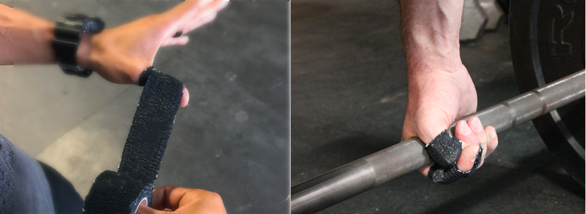

    <!-- About Section -->
    <section id="about" class="container content-section text-center">
        <div class="row">
            <div class="col-lg-8 col-lg-offset-2">
              <br/><br/>
              <h2>L-EAB에 대하여</h2>
              <br/>
                <p>L-EAB( Lite Elastic Adhesive Bandage)는 <a href="https://www.muellersportsmed.com/sports-medicine-product/athletic-tapes-wraps/tear-light.html">뮬러</a> 테입으로도 잘 알려진 제품 입니다.</p>
                <p>웨이트 리프팅 시 손목이나 손가락에 감아 부상을 방지하는 용도로 쓰이고 있습니다.</p>
                <p>뮬러 사(社)의 제품은 아니지만 CE FDA ISO승인을 받은 좋은 퀄리티의 제품을 대량으로 구매하여 저렴하게 판매합니다.</p>
                 
                <br/>
                <br/>
              </div>
        </div>
    </section>
